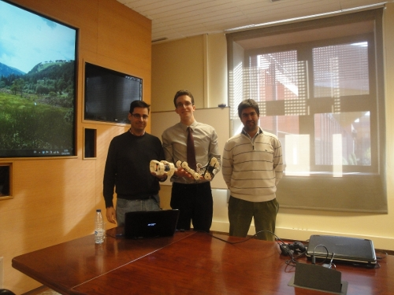

He publicado (con mucho retraso) el proyecto final de carrera de Julián Marín,
titulado:
Control remoto de un robot imprimible de exteriores, dirigido por el
prof. Alberto Valero y un servidor.
Este ha sido el primer PFC de la nueva línea de investigación que hemos abierto Alberto y yo sobre
printbots (robots imprimibles).